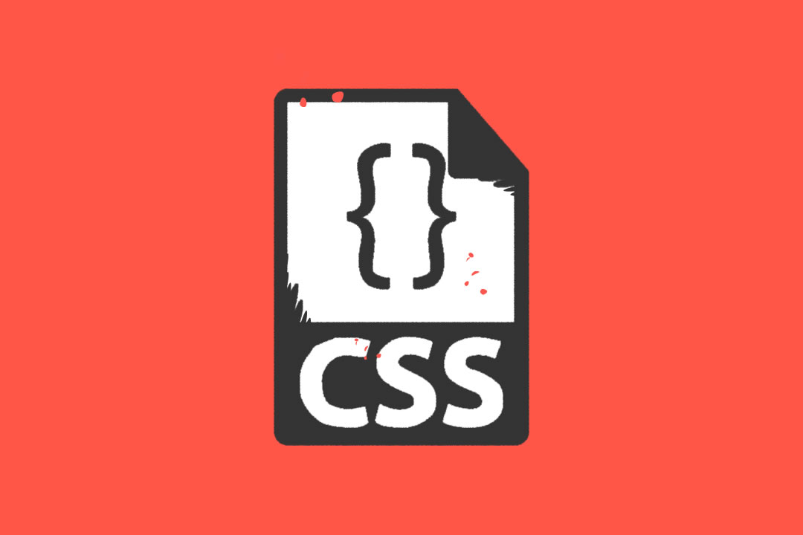

Fundamentos CSS

Segun Bert Bos (2017) las hojas de Estilo en Cascada (Cascading Style Sheets) es el lenguaje de
hojas de
estilo utilizado para describir el aspecto y el formato de un documento escrito en un lenguaje de
marcas, esto incluye varios lenguajes basados en XML como son XHTML o SVG.
La información de estilo puede ser adjuntada como un documento separado o en el mismo documento
HTML. En
este último caso podrían definirse estilos generales en la cabecera del documento o en cada etiqueta
particular mediante el atributo >style<.
Biblografía
Bos, B. (2017). Definición de Css. http://www.w3.org/Style/CSS/